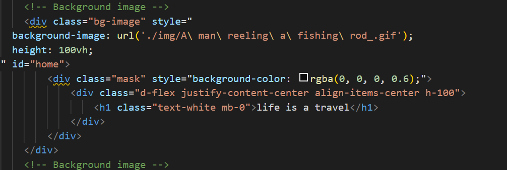

本项目开发的是一个基于MDB的纯CSS框架，主题是生命就是一场旅行(life is a travel)，该项目分为几个主要部分：
1.主页 home(主要进行页面导航功能和页面概括)
2.旅行中的风景 sensery(展示各种风景图片以及对应的风景介绍)
3.旅行中的感动瞬间 moment(展示人生旅途中的某一个感动瞬间)
4.旅行中图片展示 picture(展示人生中记录下的美丽风景照)
5.旅途中的启发 inspiration(旅途中的启发)
开发所需的资源:
MDB官网
pexels (免费素材图片)
CSDN (bug查找)
github (项目部署)
将视频转为gif(用于首页展示内容)
1.首页开发：
首先引入对应的MDB到项目中
再将对应的视频文件转换成gif格式:

设置导航栏以及对应的虚化gif背景:

2.风景开发：
使用对应的css框架就行
其他都是使用MDB自带的框架就行了
刚开始准备使用angular进行开发动态网站通过Jsonserver进行数据交互但是进行到一半，部署到GitHubPage有问题
且无法解决，就换用静态网站，在进行静态网站时遇到问题是，div的居中和层次结构问题已经解决。。。
通过上菜鸟上面熟悉对应的div相关信息
Margin(外边距) - 清除边框外的区域，外边距是透明的。
Border(边框) - 围绕在内边距和内容外的边框。
Padding(内边距) - 清除内容周围的区域，内边距是透明的。
Content(内容) - 盒子的内容，显示文本和图像。

angular的项目部署问题，以及其他动态网站部署相关问题
通过此次的项目，了解分辨了动态网页和静态网页的相关知识，知道了github的基本使用方法以及angular项目的相关使用
能够熟练使用MDB框架来搭建前端静态网站，在今后学习中要解决动态网站部署问题